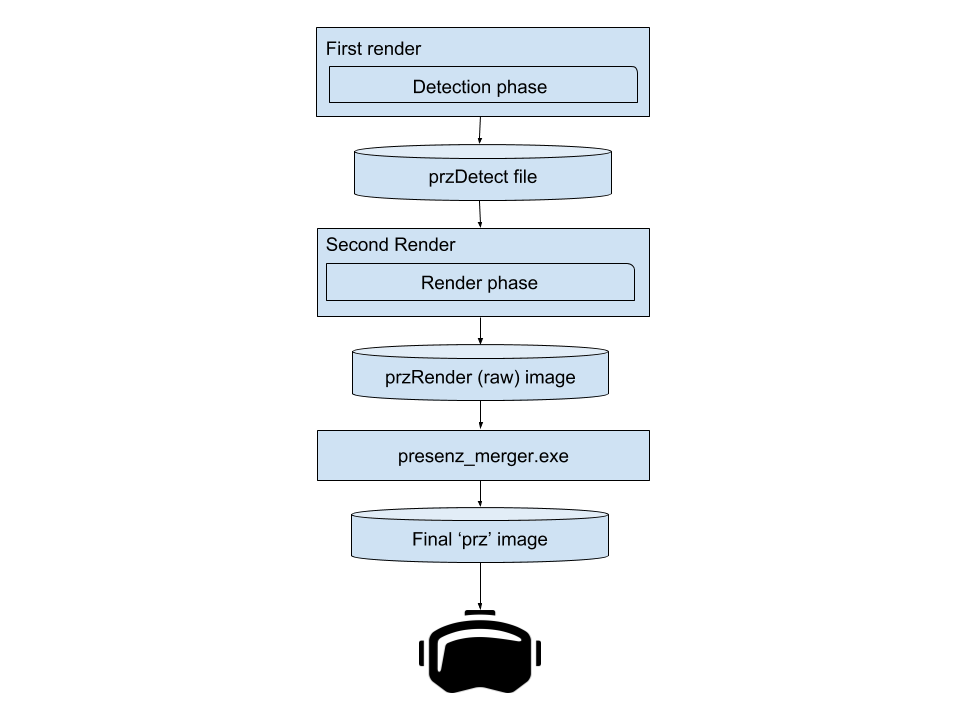

- Generated by
 1.9.1
1.9.1
|
PresenZ SDK
3.0.2
|
PresenZ images are generated from two successive renders: a detection phase and a render phase. After finishing these two renders, the merger will create a PRZ file that can be displayed on a VR headset.
The detection render attempts to discover the geometry that is visible from within the Zone Of View (ZOV). At the end of the detection render, a przDetect file is generated.
The render phase loads all the geometry referenced in the first phase and will attempt to shade the geometry by issuing sampling rays. It is in this phase that color data and other AOVs are actually computed for the scene. After executing this phase, PresenZ will generate a przRender file.
PrzRender files are uncompressed pixel data. Presenz_merger.exe will convert the previously created PrzDetect and PrzRender files to a PrZ image (similar to a PNG file) that can be displayed in a VR headset with the help of the PresenZ player.
